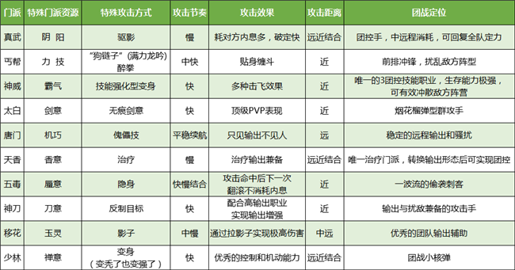
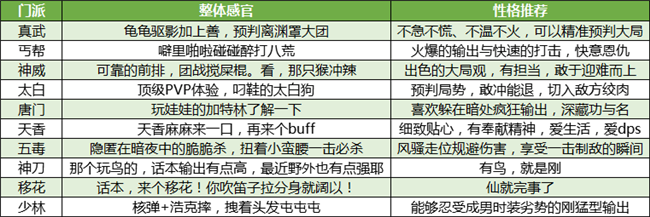

一、全门派基础定位分析
全门派基本设定和团战定位：

二、侧重性格特点的门派推荐
不同的门派有特有的节奏与定位，在选择门派时不妨综合考虑自己的性格和喜好

另外提一点呀：大轻功方面，丐帮、天香极慢，团战时天香难以脱战。倾向选用这2种职业的少侠多加留意。
三、各门派话本生存环境
话本是十分重要的一种玩法，许多道具都需要通过话本获取。不同门派在话本中有不同的位置，其中4个门派比较特殊。
1.天香
进本门槛最低的职业，仅需留意治疗属性（疗伤效果、内攻）和辅助心法即可。

2.真武
话本生态最恶劣的职业。多数真武选择肉武（绿毛龟）路线，这就造成了伤害偏低，尤其是会心率提升存在难度，使得通过招募途径进团的难度较高。然而，核武（王八）的输出还是十分可观的。

3.移花
会伤buff和分身，尤其是分身，使得移花成为话本中最抢手的职业。雨夜破天牢刚出的时候，有一个梗“背着双剑进去，吹着笛子出来”。莲华镇心魔刚出的时候，移花几乎是每个团队的必备职业。

4.神威
基于现有仇恨机制，神威可以实现控制仇恨和boss面向，能够为团队制造良好的输出环境。但是，同团双神威存在抢仇恨、抢撕裂和抢射箭破甲增强的情况，因此，团队中有2个神威后，整体输出有可能降低。